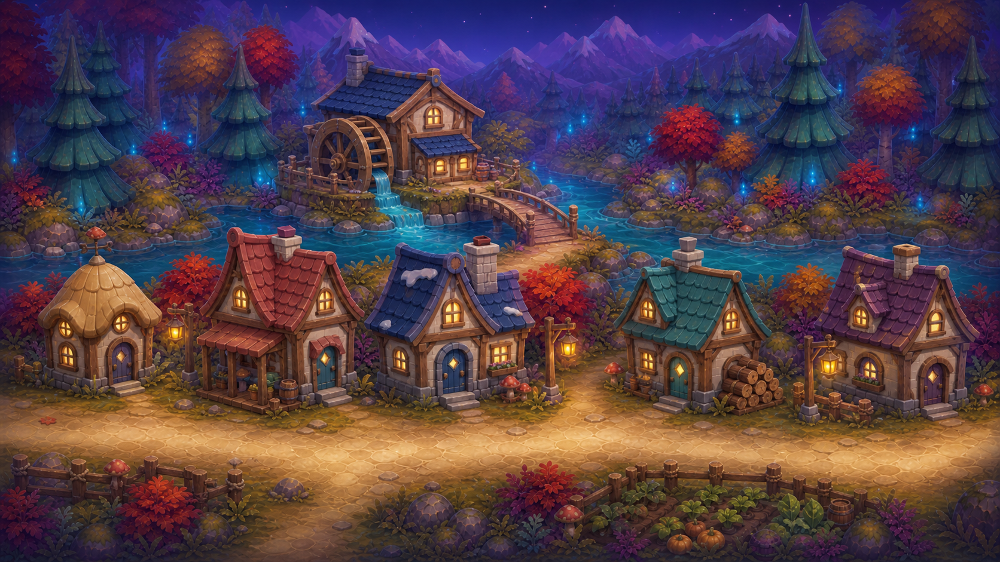

The complete authored Northern route: forest, stream, spirit grove, bridge, riverside village and the established crystal castle. The career plan now fits those places.
01 / Recovered original artwork
The full Northern journey.
Eight authored places, now recovered together. Select a panel to inspect the original art and where the career ideas belong.

05 · Mill village
Retain the watermill island, its access bridge and the existing five-house frontage. Assign uses to those buildings rather than inventing a new village.
Existing cottage: restaurant candidate. Garden frontage: Painter decoration. Mill island access stays a separate route question.
Four forest panels→Two village panels→Castle forecourt→Grand hall
This is an illustrated sequence, not a claim that panel edges stitch seamlessly. Each doorway, crossing and panel handoff needs an explicit route. The original long forest approach remains part of the world.
02 / Seasonal additions around established art
Christmas belongs in these places.
Preserve the actual buildings, castle, forest colors and room layouts. Add useful seasonal details only where they support the activities.
Village
Fit the restaurant into an existing cottage. Use the painted market for produce, another cottage for toys, and existing doors for deliveries. No replacement greenhouse or invented village footprint.
Castle
Keep the original gate, towers, fountain, twin staircases and bedroom bays. Place the Christmas gathering on the existing hall floor; reserve stairs and fountain circulation.
Season
Propose removable garlands, large star lanterns, a small tree and wrapped gifts. Keep the autumn forest and blue night palette; snow is not a whole-world repaint.
Recovered: 8 original native panels, 10 historical concept/door variants and 71 separated layer candidates. There are 22 native generation outputs in the source catalog; rejected resolution attempts and unreviewed variants are not treated as approved art.
The historical source uses a depth-based foot height without sampling the bridge’s rise. At central depth, its 427.5-pixel line crosses below the deck. The green route is a proposed ground-anchor correction for review.
Bank → landing → deck
Route through the real landing and deck interior. Clamp input to a walkable corridor; water and ropes never become shortcuts.
Deck → landing → rising path
Position Roshan’s ground anchor from the path. Split near and far rail occlusion deliberately; a single painted rail layer cannot hide the whole character correctly.
Then prove both directions
Check tap-across routing, held movement, turning, stopping, resume-on-deck, footprints at multiple sizes, and the next panel’s entry. The route is a design candidate, not a runtime fix.
White dot = ground anchor only, not Roshan’s footprint or a playable simulation. Green = proposed route; dashed red = historical central-depth foot line inferred from source. The original stream crossing, mill bridge and castle fountain/stairs need their own route reviews. No background pixels were edited.
04 / Familiar skills, different reasons to use them
Four returning careers. Two new roles.
Every activity produces something specific for the village. The chapter can unfold over many short visits; each useful step saves.
Returning / 01
Market gardener
Choose produce → fill a basket → deliver
Use the existing painted produce stall and cottage garden frontage. Reuse matching, harvest or placement only where the chosen ingredients and art support it.
The basket becomes restaurant supplies.
Returning / 02
Village chef
Picture order → prepare → serve
Mix familiar cooking with a customer relationship. The same pictured request remains visible during the recipe.
The prepared dish reaches its customer and the shared table.
Returning / 03
Window artist
Sweep color → choose → place a star
An existing cottage window becomes the canvas. Broad areas, free color choices and generous placement.
The child's decorated window stays in the village.
04
New local career
Wooden toy maker
Fit pieces → assemble → test
Combine picture placement with a broad pull-along track. Two or three parts make a boat; then Roshan tries her actual toy.
Her boat occupies the workshop's display shelf.
05
New local career
Christmas courier
Match a portrait → carry → post
One envelope and one highlighted route. A portrait on the door replaces reading an address or remembering a map.
The invitation reaches its neighbor; the gathering gains a guest.
Returning / 06
Grand-hall singer
Sound check → follow prompts → sing
A short musical celebration brings the contributions together. Prompts wait or recur kindly; Roshan starts the performance herself.
The established grand hall becomes the completed Christmas gathering.
Reserve for later: Geologist's crystal display and Stuffie Doctor's toy-care visit. Neither expands this first six-career draft. Existing portraits above are reference art; new-role costumes have not been commissioned.
05 / The representative activity
One order. A real little meal.
The Lantern Kitchen combines existing cooking gestures with a new context: understanding a visitor's request and bringing the finished dish back to them.
V1 interaction study retained for its clear order / workspace / customer relationship. Its invented room, fox and set dressing are not appearance authority. Bind the final restaurant to a selected existing cottage; reuse suitable interior art before commissioning gaps.
Left · Roshan stays visible
Reuse the Chef outfit and complete mermaid silhouette. Keep the tail clear of counters and interface cards.
Center · One active workspace
A large bowl and a few generous choices. Ingredients visibly become food; decoration does not compete with the action.
Right · The request stays present
One kind customer and one pictured dish. Keep the order in view, with a large serving destination.
Berry-bowl order storyboard
Planning walkthrough · no gameplay
Proposed voice
“Let's make this warm berry bowl.”
Visible action
Customer shows a berry-bowl picture. Roshan touches the matching bowl picture; the request remains visible.
Progress to preserve
Stable customer, recipe and order identity. No random replacement after leaving.
Full six-frame storyboard, voice drafts and saved states are in NORTHERN_CHRISTMAS_DRAFT.md.
No impatient queueNo burnt-food lossNo reading requiredLeave and resume the same dishHelp never earns an order alone
Start with berry porridge. Star biscuits and cocoa are optional menu expansion after the order relationship works and suitable ingredient/finished-state art is selected.
06 / Build only after the design is agreed
A small first proof, then a whole chapter.
NOW / DESIGN
Review the world
Choose the Christmas premise, career mix and winter treatment. Review the eight recovered panels and select buildings without changing their identity.
NEXT / STATIC LAYOUT
Bind the art
Map the existing eight-panel route and a restaurant interior; preserve the original castle and hall. Record exact source, usage, required states and voice gaps.
FIRST PLAYABLE
Prove one order
Enter, choose, prepare, serve, save and return. Verify wrong inputs, help-only input, interruption, repeat serving and sibling Chef behavior.
WITHIN AGREED SCOPE
Expand and review
Grow the six-career chapter around working contracts. Review the playable result with actual art, voices and target-device evidence.
The meaningful story choice
This draft assumes a community Christmas gathering that Roshan helps prepare. Making Santa's workshop the central story would change the cast and emphasis; settle that before expanding the next draft. Existing Northern architecture is retained. Seasonal additions are limited to compatible decorations; a snowy redesign is withdrawn.


{kind=link}